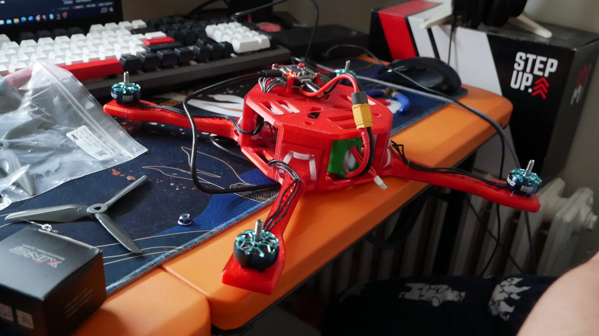
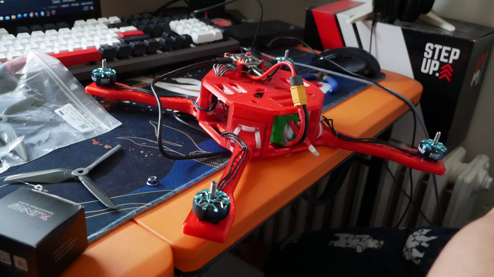
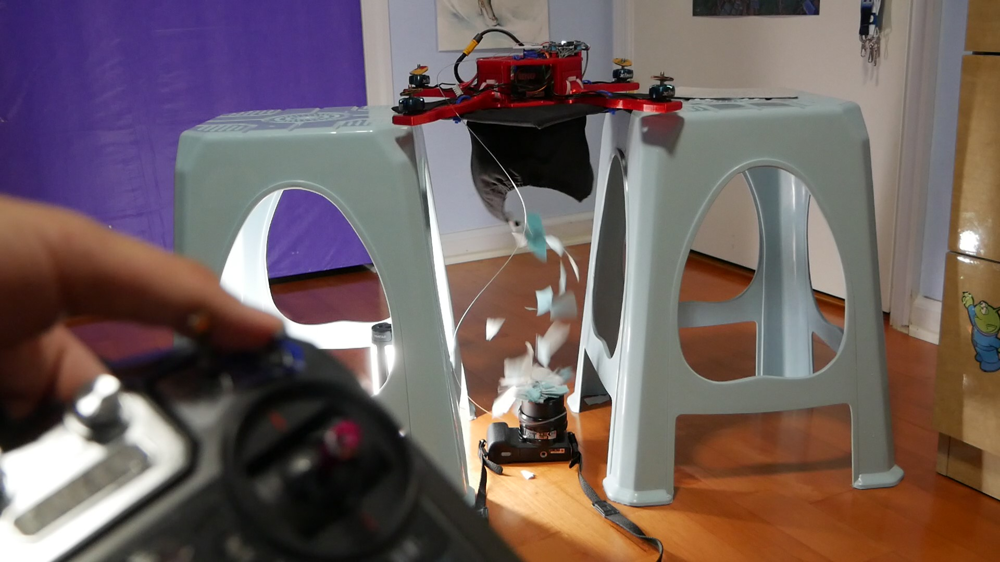
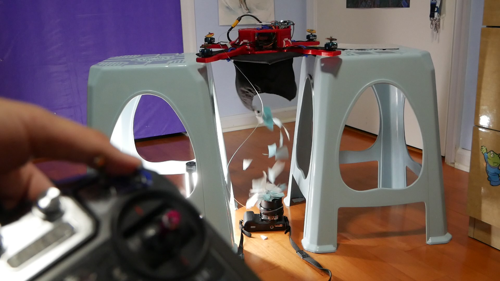

PokéBoy


 

 



> Welcome to the PokéBoy project! With the help of PCBWAY as the project sponsor, I developed a retropie project that would fit inside a standard store bought TCG Pokéball, because what else are you going to do with it?.
> This page will serve as a build guide if you ever wanted to make one, *I am not responsible for whatever outcome that might occur; like if you anger Arceus, that's not on me*
> Before we start, I highly recommend watching the full video on the PokéBoy below for a general overview of the build.
Parts
> Below are 3 links, the first one allows you to download an excel spreadsheet containing a BOM of every necessary component other than tools and wires. (you might have to port it to google sheets)
> The other two links will lead you to the PCB and CAD files respectively, I highly recommend ordering/sourcing/printing everything here while you mentally prepare.
Setting Up The Pi
> Below are 3 links, the first one allows you to download an excel spreadsheet containing a BOM of every necessary component other than tools and wires. (you might have to port it to google sheets)